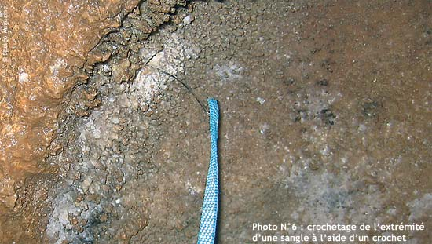

Un ancrage, un outil, un noeud L’art de tricoter.
4 août 2010 Aucun commentaire
L’AF ou l’amarrage foré Par Judicaël Arnaud & Raphaël Sauzeat – Comité Spéléo Ardèche
Certains l’appellent lunule, ou bien encore « abalakof », mais nous lui préférons AF en référence à AN. La mise en œuvre de cet ancrage consiste à percer dans la roche un tunnel de petit diamètre (de 8 à 14 mm et de préférence rectiligne) afin d’y enfiler un anneau ouvert d’amarrage.
Comme tous les autres types d’ancrages, sa qualité provient des caractéristiques de son support et de sa pose, mais il présente bien des avantages :
Tout d’abord, sa longévité, grâce à l’inexistence de contrainte mécanique de son support à vide ou d’une liaison chimique entre le support et l’amarrage.
Son impact écologique, à l’échelle planétaire, est réduit car il sollicite peu de matière première manufacturée et une « énergie grise » quasi nulle.
Son coût financier, réduit à un perforateur et une mèche.
Sa réversibilité, grâce à un maquillage facile en cas d’inutilité.
Sa discrétion, pour un enseignement pédagogique des techniques d’équipement toujours performant.
Comme tous les autres types d’ancrage, il a aussi ses inconvénients :
Sa discrétion, peut le rendre invisible aux yeux de certains.
Son utilisation peut être rendue difficile à cause d’une sangle ou d’une cordelette trop large par rapport au diamètre du trou.
L’anneau d’amarrage qui passe à l’intérieur peut être « abandonné ». Mais si cet anneau présente des signes d’usure, il sera alors facile de le changer.
Sa résistance subjective.
Sa mise en œuvre qui nécessite l’utilisation d’un perforateur et la récupération de l’importante poudre de foration.
Cet ancrage est un ancrage de plus dans la panoplie à disposition des spéléologues. Il n’y a pas de systématique dans les techniques d’équipement d’une cavité. Néanmoins, le domaine d’application de cet ancrage est large et son utilisation devrait donc satisfaire le plus grand nombre, sauf les mal voyants !
L’outil : le crochet
L’utilisation de l’AF nécessite le passage d’un anneau ouvert d’amarrage. Cette opération est parfois rendue difficile en raison d’un anneau ouvert trop large par rapport au diamètre de l’AF. Ou bien, les configurations de perçage rendent difficile son passage. Aussi l’emploi d’un crochet facilitera cette utilisation.
Fabrication (10 minutes)
Démonter un essuie-glace de voiture (photo 1)
Avec une pince plate, recourber une extrémité pour constituer un crochet. (photo 2)
Puis avec l’aide d’une lime acier (ou d’un micromoteur Dremel), affûter le crochet afin que celui-ci rentre dans les fibres de la cordelette ou de la sangle (photo 3).
Et enfin grâce à la pince plate, recourber l’autre extrémité afin de constituer un anneau pour y passer un mousqueton (photo 4).
Mise en œuvre
Passer le crochet dans l’AF que vous désirez utiliser (photo 5).
À l’aide du crochet, saisir le bout de la cordelette ou de la sangle (photo 6).

Retirer le crochet, et l’anneau ouvert suivra (photo 7).
Le nœud de Tisserand
L’utilisation de ce type d’amarrage permet de se connecter directement à la corde de progression sans l’intermédiaire d’un mousqueton. Ceci à l’avantage d’alléger le spéléologue sans pour autant affaiblir la chaîne de résistance. Attention, néanmoins, au confort dans la progression. Il est parfois plus judicieux de disposer d’un endroit confortable et identifiable pour se longer. Par conséquence, le nœud de tisserand offre plusieurs avantages : facile à régler, permet une jonction directe avec la corde, se défait facilement, a été testé par l’École Française de Spéléologie lors de la campagne de test sur l’utilisation de la cordelette Dyneema en milieu souterrain.
Réalisation
Prendre les deux bouts de l’anneau et constituer un tisserand simple dans la ganse du nœud (photos 8 et 9).
Bloquer le tisserand avec un nœud de huit plein poing en passant un bout par l’intérieur de l’anneau. Ce qui aura pour effet de fermer l’anneau (photos 10 et 11).